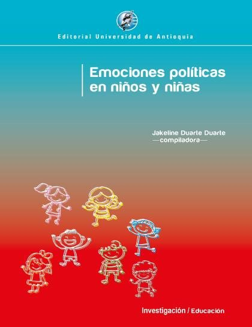

Emociones políticas en niños y niñas
Duarte Duarte, Jakeline; Gómez Marín, Alexandra; Marín Posada, Mary Luz; Saldarriaga Vélez, Jaime Alberto; Galeano Guevara, María Camila; Marín Ruiz, Maritza; Saraza Henao, Saraza Henao; López Olano,
Emociones políticas en niños y niñas indaga por la vinculación con lo público y lo diverso desde la infancia. El libro centra su interés en comprender y cultivar las emociones políticas en los niños y las niñas en la búsqueda del reconocimiento del otro diferente, especialmente del otro estigmatizado, y en la construcción de vínculos sociales, como la solidaridad y la capacidad de situarse en el lugar de otras personas y de entender sus sentimientos, sus deseos y sus expectativas. La obra tiene como punto de partida las narrativas aspiracionales de los niños y las niñas, para lo cual se enfoca
- Obtenido de
- Universidad de Antioquia
- Editorial
- Editorial Universidad de Antioquia, 2019
- Licencia
- CC BY-NC-ND 4.0
- Tipo
- General · 141 páginas